Digitale Operaties
Digitale Operaties
- Hoog signaal (5V)
- Laag signaal (0V)
- TTL levels
- Richting
- Output (Currrent Sourcen)
- Input (Current Sinken)
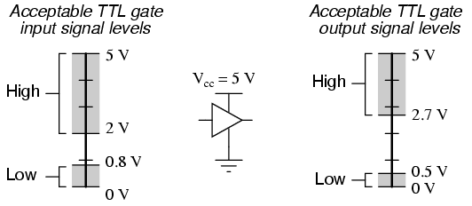
Hoeveel waarden kan een digitale pin aannemen?
3
High (5V)
Low (0V)
High Impedance (?V)
pinMode
void setup()
{
pinMode(pinNumber, INPUT);
pinMode(pinNumber, INPUT_PULLUP);
pinMode(pinNumber, OUTPUT);
};
Digitale Input
Tri State Logica
| A | B | C |
| 0 | 1 | 0 |
| 1 | 1 | 1 |
| X | 0 | Z |

Tri State Logica
- pinMode = INPUT
- Pin is dan hoog impedant
- Pin kan dan zweven(Waardes zijn random)
- Reden
- Ruis op het systeem
- Capacitieve koppeling
- Oplossing
- Extern
- Intern
Tri State Oplossen
- Extern
- Pull Up Weerstand
- Pull Down Weerstand
- Intern
- Pull Up Weerstand
Extern
- Pull Up:
- constant HIGH signaal
- constant stroom verbruik
- Pull Down:
- constant LOW signaal
- geen stroom verbruik
- Keuze afhankelijk van je input
- Voor een simpele push button kan beide
Pull Up Resistor

Pull Down Resistor

Weerstand keuze
- Input = Current Sinken
- Stroom wordt in de MCU gestuurd
- Geen weerstand = Problemen
- Max Sink Current / Pin = 20mA
- Veilige keuze weerstand: 10kΩ
- R = U/I => I=U/R => 5V/10kΩ=0.5mA
Intern
- Interne Pull Up weerstand
- Waarde 20kΩ - 50kΩ
- Goed genoeg voor een pushbutton
void setup()
{
pinMode(pinNumber, INPUT_PULLUP);
};

Digitale Output
- Geen Tri State logica
- High of Low signaal
- Output = Current Sourcen
- max Current = 40mA
- max Current alle IOs = 200mA
- Stuur je iets aan, minimale hoeveelheid stroom aanleveren
Analoge Operaties
Analoge Operaties
- Digitaal / Analoge Conversie
- Analoge Comperator
- Analoog / Digitale Conversie
Er zijn verschillende analoge operatie maar voor de moment is alleen analoog naar digitaal belangrijk.
AnalogRead
int pinValue;
int pinNumber = 7;
void setup()
{
pinMode(pinNumber, INPUT);
}
void loop()
{
pinValue = analogRead(pinNumber);
}
Analoge Digitale Conversie (ADC)
- AnalogRead is een A/D conversie
- Eigenschappen ADC
- Resolutie
- 2^(#Bits ADC)
- 1024
- Range
- 0 - 2^(#Bits ADC -1)
- 0 - 1023
- Accuracy
- Vref / Resolutie
- 5V / 1024 ≈ 4,9mV
- analogRead = (Vin * Resolutie)/Vref

PWM
PWM
- Geen analoge actie
- Analog result with digital means
- Draait op een frequentie 500Hz
- De analogWrite bepaalt de dutycycle

PWM op de scope
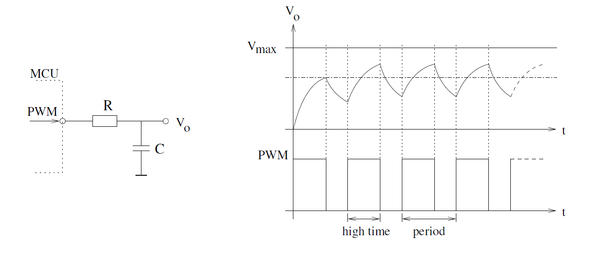Fading
int ledPin = 9; // LED connected to digital pin 9
void setup() {
}
void loop() {
for (int fadeValue = 0 ; fadeValue <= 255; fadeValue += 5) {
analogWrite(ledPin, fadeValue);
delay(30);
}
for (int fadeValue = 255 ; fadeValue >= 0; fadeValue -= 5) {
analogWrite(ledPin, fadeValue);
delay(30);
}
}
Timers
Timers
- Arduino claimt de timers van de mcu
- Arduino biedt geen directe acces aan
- Arduino legt exposed de timers dmv:
- delay()
- delayMicros()
- millis()
- micros()
Delay
- delay(int ms)
- Pause;
- milliseconden
- Blocking
- Referentie
- delayMicros(int µs)
- ≈ delay()
- microseconden Referentie
Millis
- millis()
- Tijd sinds het opstarten van de mcu
- milliseconden
- Overflow na 50 dagen
- Referentie
- ≈ millis()
- Tijd sinds het opstarten van de mcu
- milliseconden
- Referentie
Example
const int ledPin = 13;
int ledState = LOW;
long previousMillis = 0;
const long interval = 1000;
void setup() {
pinMode(ledPin, OUTPUT);
}
void loop() {
unsigned long currentMillis = millis();
if (currentMillis > interval + previousMillis ) {
previousMillis = currentMillis;
ledstate = !ledstate
digitalWrite(ledPin, ledState);
}
}
Interrupts
Interrupts
- Reactie op een event
- Non - Blocking
- Interrupt Types
- Hardware
- Software (Vereist OS)
- Interrupt bron
- Extern
- Meestal verandering op een pin
- Pin State Change
- Seriële communicatie
- Intern
- A/D Conversie voltooid
- Timer afgelopen
Interrupts
- Onderbreking huidig processor activiteit
- Interne of Externe trigger
- Interrupt Service Routine(ISR)
- Na trigger springt de code naar de ISR
- ISR een koppeling van event naar een functie
- Na de ISR springt de code terug
Interrupts

Wat is de tegenpool van interrupts?
Polling vs. Interrupts
| Polling | Interrupts |
| Synchroon | Asynchroon |
| Niet dringend | Dringend |
| Frequent | Sporadisch |
Polling vs Interrupts
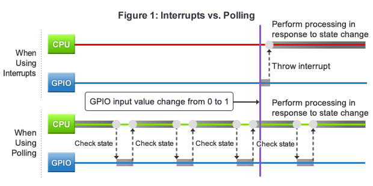Interrupts & Arduino
- Interrupts zitten verwerkt in de beschikbare library
- Meest toegankelijke: External Interrupts
- Interrupts gebaseerd op Inputs
- Pin specifiek
- 4 Functies
- Arduino Interrupt Reference
- delay() werkt niet in een ISR
Interrupts & Arduino: Pins
| Board | Digital Pins Usable For Interrupts |
| Uno, Nano, Mini, other 328-based | 2, 3 |
| Mega, Mega2560, MegaADK | 2, 3, 18, 19, 20, 21 |
| Micro, Leonardo, other 32u4-based | 0, 1, 2, 3, 7 |
| Zero | all digital pins, except 4 |
| MKR1000 | 0, 1, 4, 5, 6, 7, 8, 9, A1, A2 |
| Due | all digital pins |
| 101 | all digital pins |
Interrupts & Arduino: Functies
interrupts()
//Staat standaard aan
//Gebruikt na het uitzetten van interrupts
noInterrupts()
//Uitzetten van interrupts
//Kan nodig zijn bij tijd cruciale acties
attachInterrupt(digitalPinToInterrupt(pin), ISR, mode)
//digitalPinToInterrupt(pin) - mappen van Arduino Pin naar ATmega328p
//ISR - Naam van de functie die wordt aangeroepen als de interrupt optreedt.
//mode - Het soort event waarop de interrupt gaat triggeren
//mode - LOW, CHANGE, RISING, FALLING
detachInterrupt(digitalPinToInterrupt(pin));
//ontkoppelen van de interrupt
Volatile Keyword
volatile int ButtonState = 0;
- Actie voor de compiler
- Plaats de variable in het ram geheugen ipv een register
- Nodig als je een variable aanpast in een interrupt
Oefening
- circuits.io
- Arduino Simulator
- Account aanmaken
- Dupliceer deze oefening
- Toggle de status van een led met drukknop
- Debounce de interrupt schakelaar met een delay van 1000ms
Debouncing a Button
Het probleem?
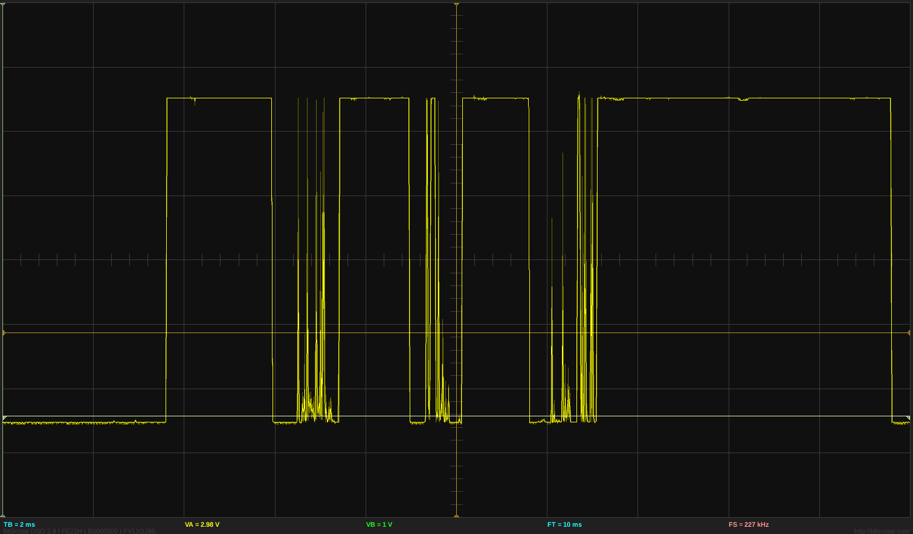
Oplossing
- Hardware
- Sequentiële Logica
- RC Circuit
- Software
Startpunt
Voor zowel de hard -en software vertrekken we van een ...
Pull Up Resistor
Pull Down Resistor
Hardware: Sequentiële Logica
NAND Poort Oplossing
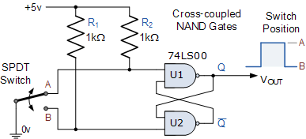NOR Poort Oplossing
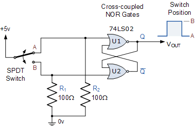Bulky oplossing krijgt geen voorkeur
Hardware: RC Debouncer
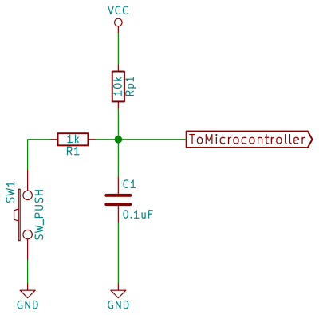RC Debounce
Wat gaat er gebeuren met het ingangssignaal?
RC Charging Circuit
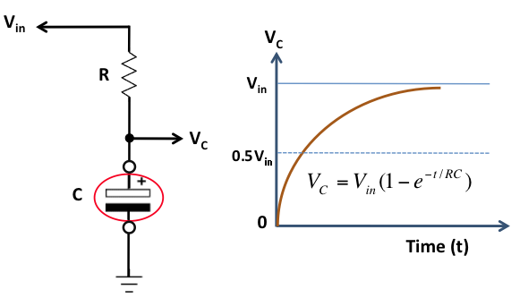RC Charging Circuit
- Tijd nodig om te laden
- Tijd nodig om te ontladen
- Ongevoelig voor snelle veranderingen
- Filtert de bounce weg
- Hardwarematige delay
RC Charging Circuit
- `tau -= R * C`
- Eenheid τ seconden
- `V_(C) = V_(S)*(1 - e^(-t/(RC)))`
- `V_(C)` Uitgangspanning condensator
- `V_(PIN)`
- `V_(S)` Ingangsspanning condensator
- `V_(C C)`
- 5V indien het een pulldown / up weerstand die gevoed is door de Arduino
- Arduino TTL Levels
- Logische Hoog vanaf 2,0V
| Time Constant | RC Value | `% V_(S)`` |
| `0 tau` | `0*RC` | `0 %` |
| `0.7 tau` | `0.7*RC` | `50 %` |
| `5 tau` | `5*RC` | `100 %` |
Vraag
Als ik delay van ≈50ms wil inbouwen voor dat ik een hoog signaal heb, hoeveel is dan mijn tijdsconstante (met een mogelijke weerstand en condensator waarde)Een goede delay?
Een delay tussen de 20 - 50 ms is een goede keuzeHoe rekening met de logische levels
Alle signaal problemen opgelost?
Zo goed als
Hysteris
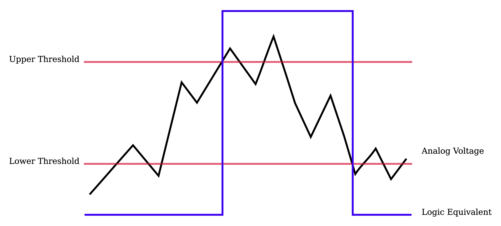Oplossing:Inverting Schmitt Trigger
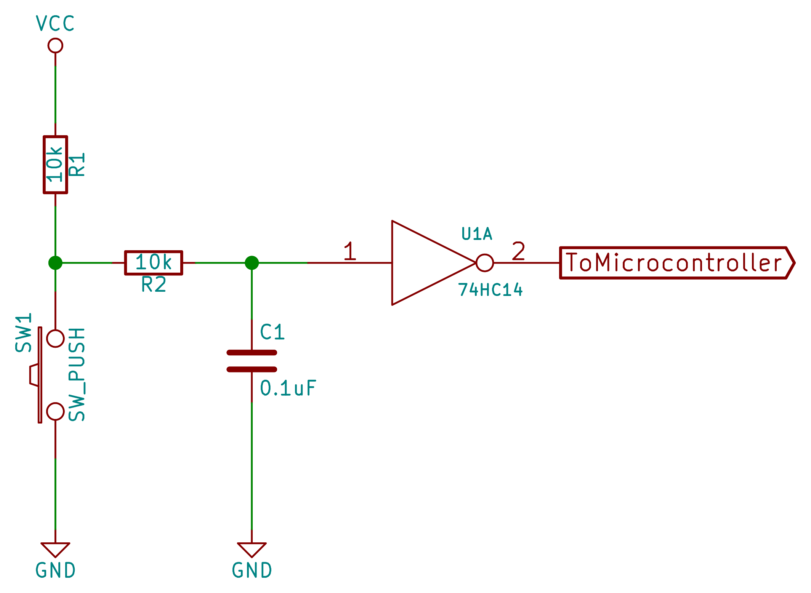Oplossing:Inverting Schmitt Trigger
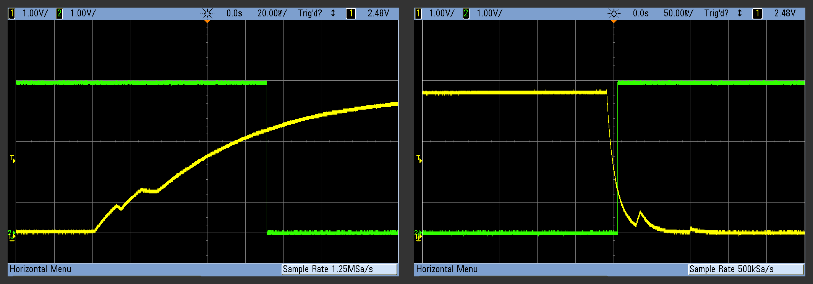Waarom de extra stap?
Met gebruik veranderen de mechanische eigenschappen van een knop
Software Oplossing
- Basic (Blocking)
- Arduino Example(Non - Blocking)
Basic
const int buttonPin = 2;
int buttonState;
int lastButtonState = LOW;
long debounceDelay = 50;
void setup() {
pinMode(buttonPin, INPUT);
}
void loop() {
int reading = digitalRead(buttonPin);
if (reading != lastButtonState) {
delay(debounceDelay)
lastButtonState = reading;
}
}
Arduino Debounce Example: Variables
const int buttonPin = 2;
const int ledPin = 13;
int ledState = HIGH;
int buttonState;
int lastButtonState = LOW;
long lastDebounceTime = 0;
long debounceDelay = 50;
Arduino Debounce Example: Setup
void setup() {
pinMode(buttonPin, INPUT);
pinMode(ledPin, OUTPUT);
digitalWrite(ledPin, ledState);
}
Arduino Debounce Example: Loop
void loop() {
int reading = digitalRead(buttonPin);
if (reading != lastButtonState) {
lastDebounceTime = millis();
}
if ((millis() - lastDebounceTime) > debounceDelay) {
if (reading != buttonState) {
buttonState = reading;
if (buttonState == HIGH) {
ledState = !ledState;
}
}
}
digitalWrite(ledPin, ledState);
lastButtonState = reading;
}